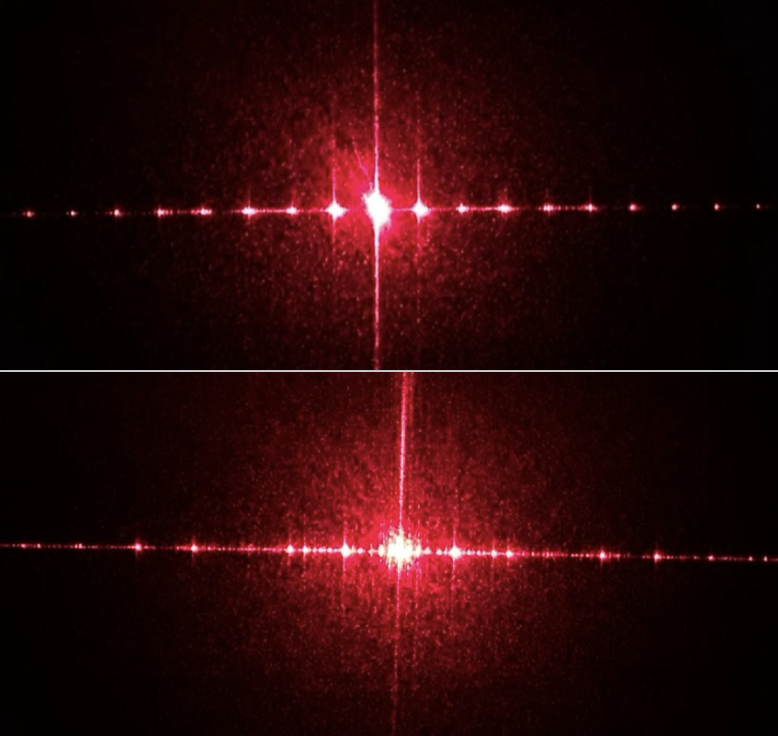
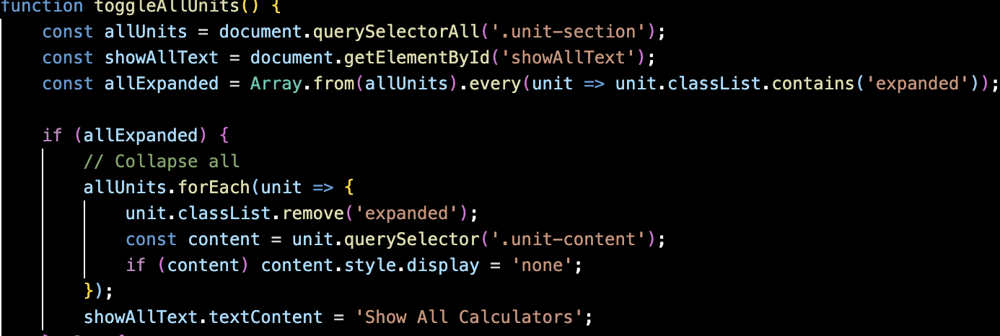
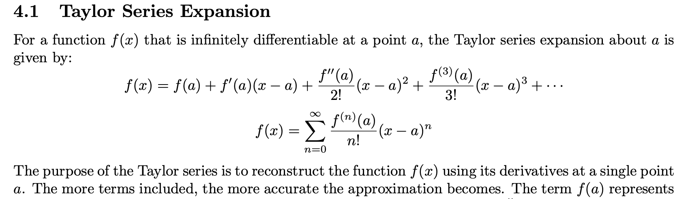
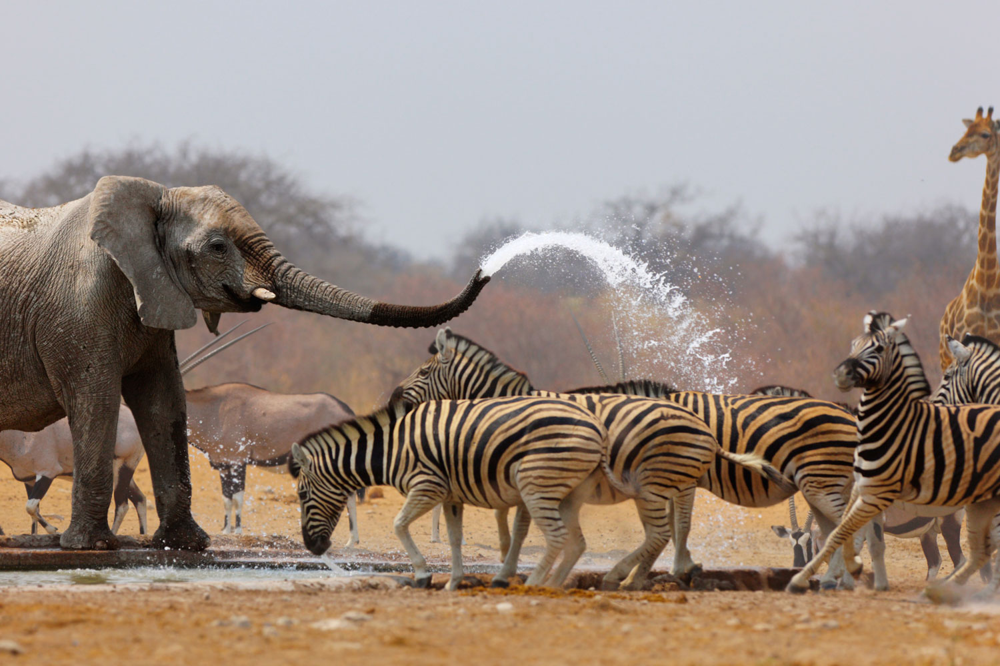

Experimental design — exploring quantum pathways
This project explores the intersection of quantum physics and material science, using simulations and real-world experiments to uncover how photon diffraction works. An independent project investigating how the "action principle" is applied in photons and other quantum particles.
Current Projects

CHEMI
A coding challenge involving designing and building a chemistry study website with dynamic calculators, question databases, and practice tools. Developed using Claude Code alongside manual HTML, CSS, and JavaScript.
Completed Projects

Maths and Statistics Challenge
A deep dive into advanced statistical methods and data analysis, culminating in a published report. Led the analysis and data visualisation efforts for this collaborative challenge.

IMMC — Wildlife Protection Optimisation
A five-day international mathematical modelling challenge. Developed the Composite Animal Safety Risk Index (CASRI) to optimise wildlife surveillance and ranger deployment across Etosha National Park's 22,935 km².
No preview available